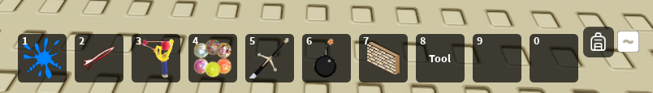

Configurations
MaxHotbarToolSlots
This setting controls the maximum amount of tool slots allowed to be used reguardless of the client's screen size.
Setting set to 5
MinHotbarSlots
This setting controls the minimum amount of tool slots allowed to be used reguardless of the client's screen size.
Setting set to 6

NeededFreeSpace
This setting determines how many pixels is "reserved" when calculating how many tool slots the client should have.
Notice
Having a higher number may result in less tool slots.
EquipCooldown
This setting determines how long the client has to wait in between equipping. Useful for preventing equip spam.
ViewportSpeed
This setting determines how fast tools move in their viewport frame.
Setting set to 10

SweepInterval
This setting determines how long it takes for reusable inventory slots to be destroyed.
When a inventory slot is created for a tool, BackpackManager does not delete it immediately when it is not needed anymore instead BackpackManager reuses slots whenever one is needed. These reusable slots are only deleted when a sweep occurs.
MaxHeldTools
This setting determines how many tools can be held at once by the player.
Setting set to 3

DragWaitTime
This setting determines how long the player needs to hold left click on a tool before it starts dragging.
Setting set to 1

ToolTipSpeed
This setting determines how fast tool tips display.
Setting set to 0.012

AutoCalculateMaxToolSlots
This setting determines if BackpackManager will dynamically set the max tool slots depending on screen size.
Notice
This setting will respect the preset maximum and minimum tools by the developer and will never go below the minimum or above the maximum.
Setting set to true

UseViewportFrame
This setting when enabled will automatically display tools in viewport mode.
Setting set to true
UseScrollWheel
This setting when enabled will allow for the client to cycle through tools using their mouse's scroll wheel.
CanOrganize
This setting determines if the client is allowed to move tools.
Animate
This setting determines if BackpackManager will use animations.
Setting set to false

AutoSortSlots
This setting determines if BackpackManager will automatically sort tool slots when a tool is removed.
Setting set to true

PreventEquippingOnToolCooldown
This setting determines if a tool that has a cooldown active on it will be allowed to be equipped.
UseGamepadCursor
This setting determines if the gamepad cursor is used when the inventory is opened.
Setting set to true

Setting set to false

ShowHints
This setting determines if input hints are shown.
Setting set to true
ShowBackpackIcon
This setting determines if the backpack icon will be displayed.
Setting set to true
Setting set to false
ShowInactiveHotbarSlots
This setting determines if unused hotbar slots are displayed.
Setting set to true

Setting set to false

Notice
If this setting is disabled then you will have to implement your own backpack button for mobile users to access the inventory.
BackpackButtonOpenedColor
This setting determines the color of the backpack icon's color when the inventory has been opened.
Setting set to RGB(203, 53, 53)

DesiredPadding
This setting determines the spacing of tool slot gui elements.
Setting set to UDIM(0, 2)

InventoryYOffset
This setting determines the offset of the inventory in the Y axis.
HotbarYOffset
This setting determines the offset of the hotbar in the Y axis.
GlueContainerXOffset
This setting determines the offset of the glue container in the X axis.
BackpackButtonXOffset
This setting determines the offset of the backpack button in the X axis.
BackpackButtonYOffset
This setting determines the offset of the backpack button in the Y axis.
SlotAnimateStartYOffset
This setting determines the start offset of the highlight in the Y axis.
SlotAnimateStartXOffset
This setting determines the start offset of the highlight in the X axis.
ToolTipYOffset
This setting determines the offset of tool tips in the Y axis.
INVENTORY_OPENANDCLOSE_KEYCODES
This setting determines which keybinds open and close the inventory.
FASTMOVE_KEYCODES
This setting determines which keybinds while pressing left click on a tool while the inventory is opened will preform a fast move.
GUI_SELECTION_KEYCODES
This setting determines which keybinds will select tool slots while in UI navigation mode.
CYCLE_LEFT_KEYCODES
This setting determines which keybinds will cycle left through the hotbar.
CYCLE_RIGHT_KEYCODES
This setting determines which keybinds will cycle right through the hotbar.